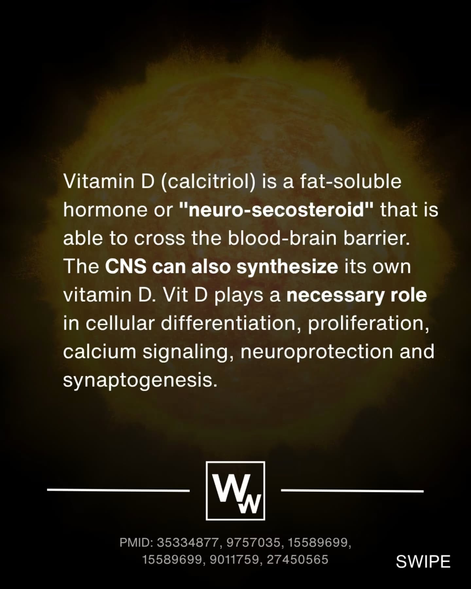
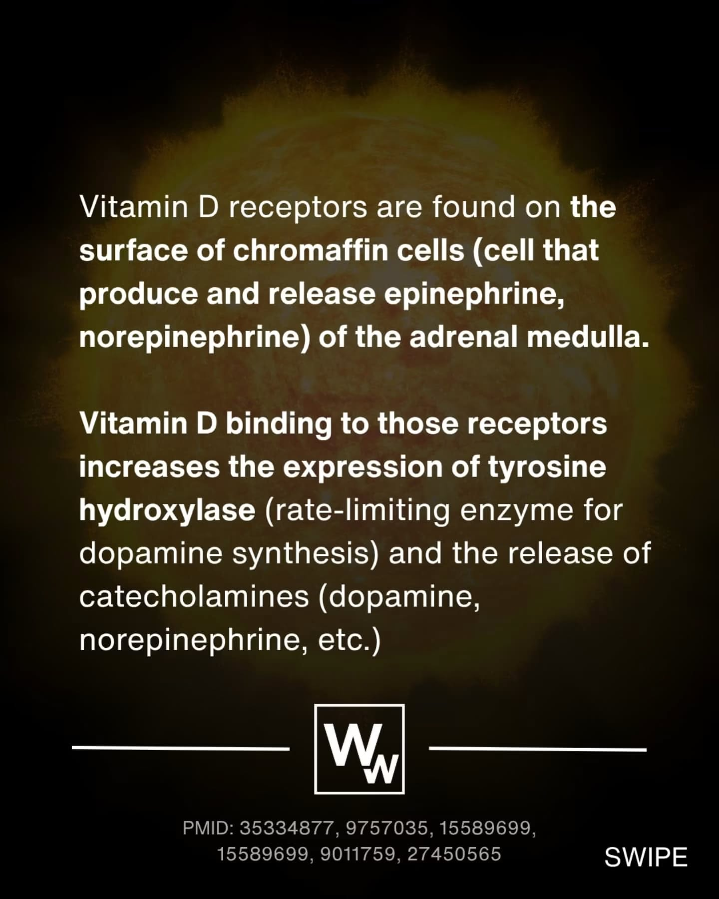
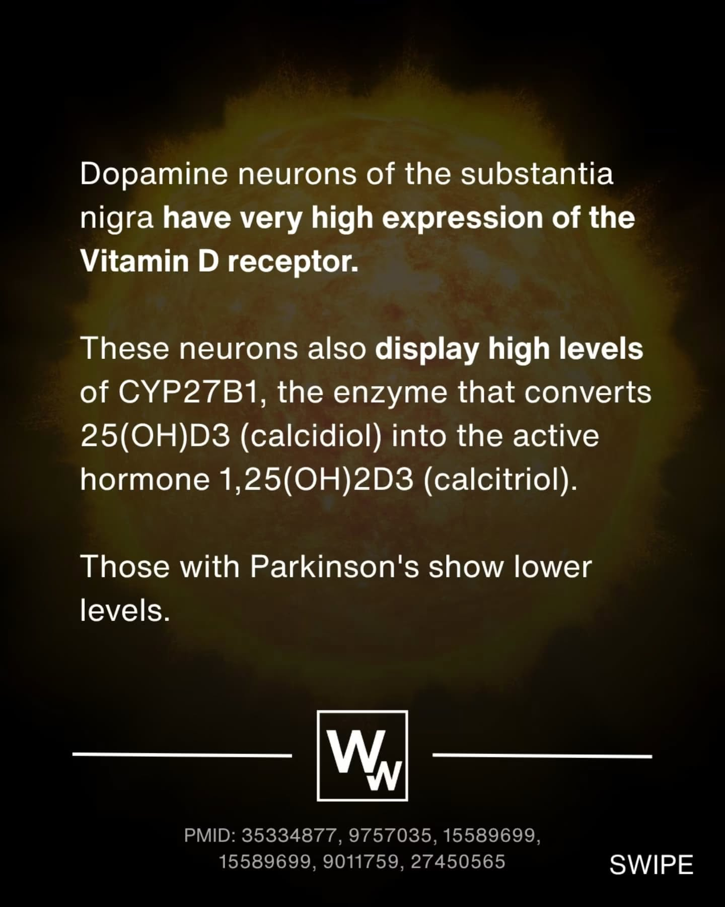
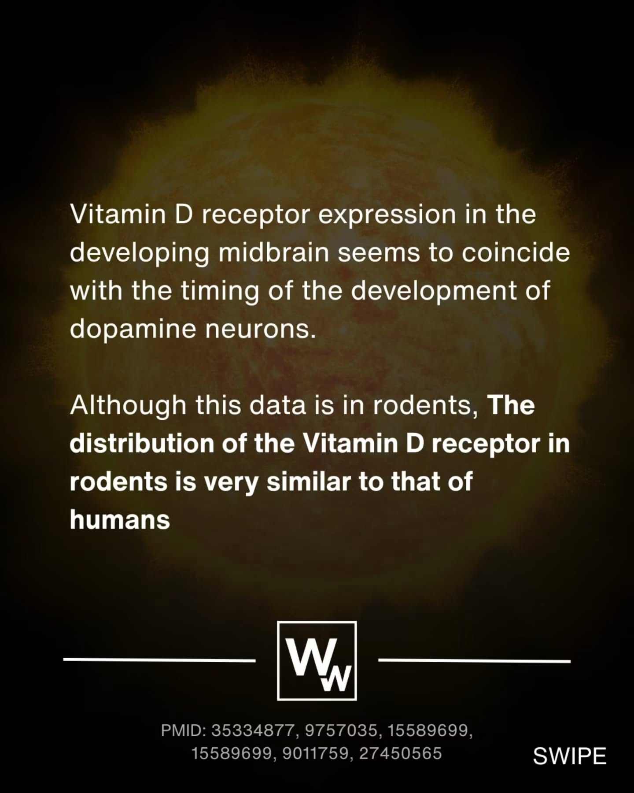

Vitamin D is a neurosteroid.
#vitamindHD #brainHD
Vitamin D was first proposed as a "possible" neurosteroid (although not a steroid, per se. Vitamin D is categorized as a “Secosteroid”) 20 years ago due to the presence of vitamin D-specific receptors in the brain and its effects on both developing and adult brains. More recently, it has been affirmed as a neuro[seco]steroid and has been called "the neglected neuro[seco]steroid" by scientists who study its effects on brain development closely.
There have been several brain-associated pathologies and disorders tied to vitamin D deficiency (e.g. schizophrenia, autism, Parkinson's, Alzheimer's, etc.). Regarding neurotransmission, there is strong evidence (in cell & rodent models for obvious reasons) that vitamin D is important for the development and maintenance of dopamine signaling in the brain (the brain chemical most associated with motivation and reward-driven behavior). Note: there is cell data suggesting vitamin D deficiency may negatively affect the serotonergic system as well.
In developing brains, the vitamin D receptor can be found early, around the peak age for when most dopamine neurons are born. Vitamin D deficient brains (rodents) have shown to have reduced number of specific proteins that are critical for maturation of dopamine neurons (getting rid of these proteins results in reduced dopamine cell numbers, and altered positioning of the dopamine neurons - this has been shown to negatively affect dopamine metabolism later in life). Furthermore, another study showed that vitamin D deficiency in the developing brain results in reduced expression and protein levels of tyrosine hydroxylase (the rate-limiting enzyme in dopamine production). The same study demonstrated that the same brains had reduced BDNF levels (another study showed reduced Nerve Growth Factor) during critical developmental periods.
In models of neurodegeneration (in rodents), the active hormone form of vitamin D protected against and, in some cases, alleviated disease-specific pathology. For instance, acute administration demonstrated protection of dopamine neurons in different models of Parkinson's (by increasing tyrosine hydroxylase activity).




